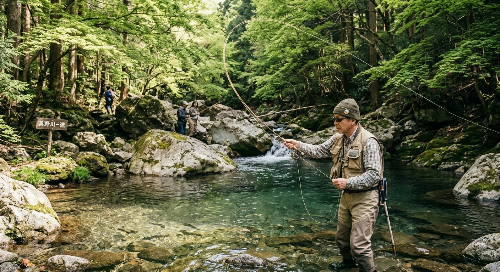
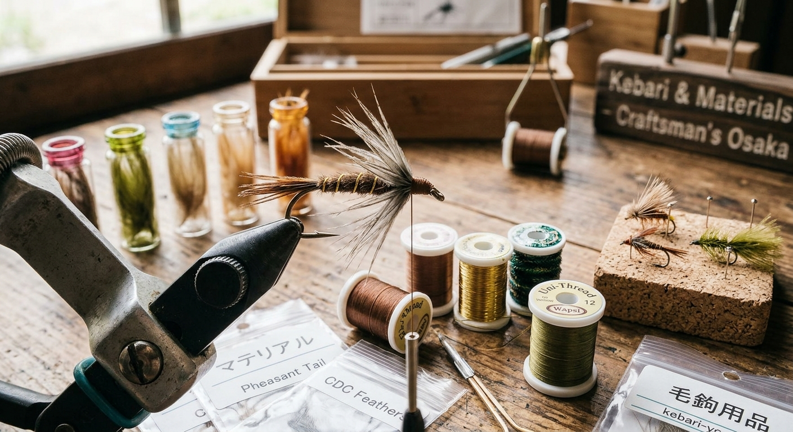
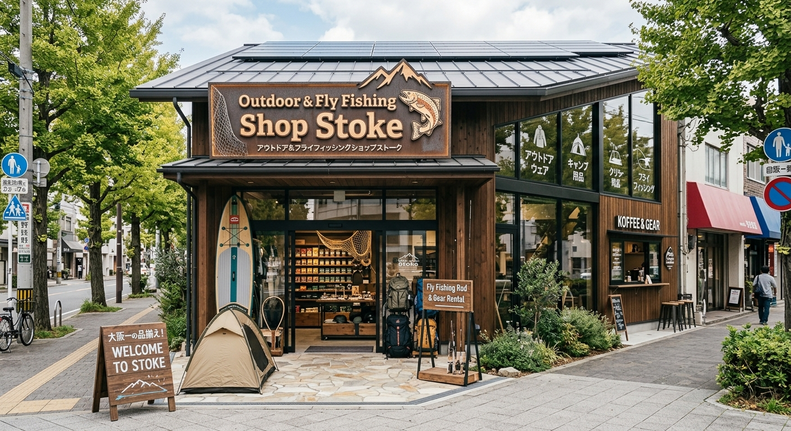

仙台・宮城野区｜アウトドア＆フライフィッシングショップ ストーク
渓流から本流、ソルトまで。マテリアルもタックルも、フライ一筋の品揃えでお待ちしています。
022-252-9588 に電話する当店はフライ専門ショップです。釣り場に合わせたタックルから、フライを巻くためのマテリアルまで、フィールドの数だけ選択肢を取り揃えています。

これからフライフィッシングを始めたい方に、必要なものと順番をていねいにお伝えします。
探している商品がネットショップに載っていなくても、お気軽にお問い合わせください。
ひとつの店で、釣りに行く準備と、フライを巻く準備がそろいます。
★★★★★
フライフィッシングをやっていた1992〜2010年頃まで大変お世話になりました。タックル、マテリアルその他モロモロ、色々融通利かせて頂きました。
宮城県で数少ないフライフィッシング専門店。店長の豊富な知識と経験に裏打ちされたアドバイスは、これからフライフィッシングを始めたい方の参考となること間違いなし！僕の中ではナンバーワンのお店です！
Google口コミより
